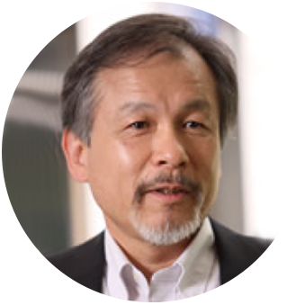
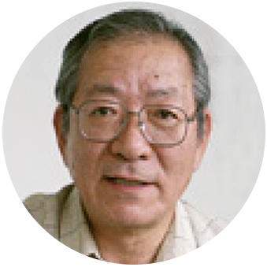
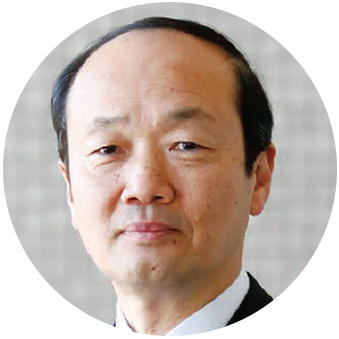
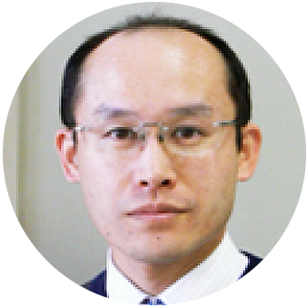
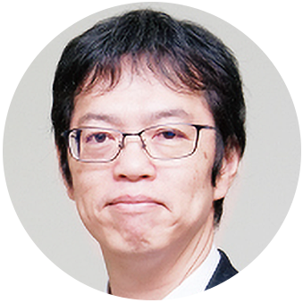
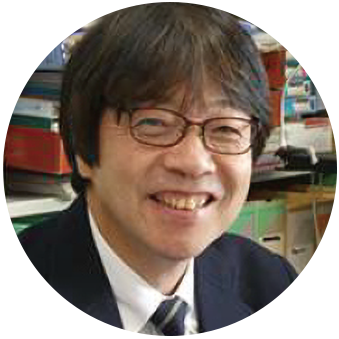
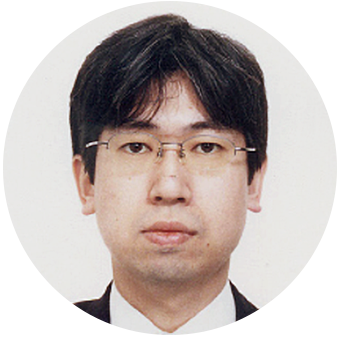

長浜アカデミックサポートチーム
NAST
長浜アカデミックサポートチーム NAST（ナスト）は、
長浜市内を中心としたバイオ関連事業に取り組むまたは取組もうとする
企業・事業者の技術的・専門的支援を行います。
気軽にご相談ください
お問い合わせする
バイオプロジェクト創出サロン
5つの特徴
様々な分野の専門家から、これまでとは違った視点で助言がもらえる
滋賀県内の大学（専門家）とのネットワークが構築できる
各種専門家等々の個別相談が可能（助成金※を活用して、個別勉強会（無料）などが実施できる）
※バイオ・プロジェクト形成支援事業助成相談から事業化までの支援を実施
県内の支援機関との連携が可能
バイオプロジェクト創出サロン
事例紹介
長浜市Y社
もぐさの製造工程で出てくるヨモギの残渣の有効活用に関して相談
- →もぐさの収量を上げるため、バイオ技術を活用して長浜バイオ大学と共同研究を実施中。（助成金の活用）
- →最適栽培方法の可能性について言及があり、栽培方法の検討予定
- →残渣に含まれている成分分析、残留農薬の検査を行い、機能性食品として商品開発を検討
米原市Y社
発電所から出てくる産業廃棄物の有効利用に関する相談
- →バイオマス発電から発生する灰の有効利用方法について相談
- →灰の特性を利用した幾つかのの可能性を提示
- →情報共有することで、新たな解決方法を模索していく
Special member!!
サロン運営委員メンバー

横田明穂先生
- 滋賀バイオ産業推進機構
理事長 - 奈良先端科学技術大学院大学
名誉教授 - 農学博士

新名惇彦先生
- 滋賀バイオ産業推進機構
顧問 - 奈良先端科学技術大学院大学
名誉教授 - 工学博士

蔡 晃植先生
- バイオプロジェクト創出サロン 運営委員長
- 長浜バイオ大学 学長
- 農学博士

扇田久和先生
- 滋賀医科大学 教授
- 医学博士

三原久明先生
- 立命館大学 教授
- 農学博士

大門弘幸先生
- 龍谷大学 教授
- 農学博士

入江俊一先生
- 滋賀県立大 准教授
- 農学博士
バイオプロジェクト創出サロン
解題解決までのプロセス
- STEP1
個別相談会 - サロン運営委員から様々な視点で意見やアドバイスを聞き、課題解決までのアプローチの仕方を考えます！
- STEP2
マッチング支援／勉強会の開催 - 課題解決に向けて専門家や大学とのマッチング支援を行います。
また必要に合わせて勉強会なども開催します。 - STEP3
大学や研究機関との共同研究 - 大学や研究機関との共同研究を支援します！
共同研究には、SBO 基金の活用も可能です。 - STEP4
事業化支援 - 研究成果を事業化するために必要なサポートを行います！
参加お申し込みはこちら受付中!!
個別相談会 参加申込フォーム